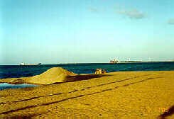

<!DOCTYPE HTML PUBLIC "-//W3C//DTD HTML 4.01 Transitional//EN"
"http://www.w3.org/TR/html4/loose.dtd">
<html>
<head>
<title>Fortaleza</title>
<meta http-equiv="Content-Type" content="text/html; charset=iso-8859-1">
<link href="../w1.css" rel="stylesheet" type="text/css">
</head>
<body>
<div class="menusup" align="center"> 
[ <a href="../index.html">Home</a>
 | <a href="../world.html">Roots and Wings</a> | <a href="../links.html">More</a> ] </div>
<div class="content" align="center">
<hr><p align="center">

</p><p class="menuinf" align="center">
<nobr>
<A HREF="39.html"><--</A>&nbsp;|&nbsp;
Bebelu
<A HREF="04.html">1</A>&nbsp;|&nbsp;
<A HREF="05.html">2</A>&nbsp;|&nbsp;
Ideal
<A HREF="06.html">1</A>&nbsp;|&nbsp;
<A HREF="07.html">2</A>&nbsp;|&nbsp;
<A HREF="08.html">Diários</A>&nbsp;|&nbsp;
<A HREF="09.html">Barao de Studart</A>&nbsp;|&nbsp;
<A HREF="10.html">Ponta Mar</A>&nbsp;|&nbsp;
<A HREF="11.html">Bancários</A>&nbsp;&nbsp;
<A HREF="12.html">--></A>
</nobr><p class="annotation">Instruções: siga o menu da esquerda para a direita. Você estará caminhando na Beira-Mar de Fortaleza.<br>Obs.: Fotos com baixa resolução para rápido carregamento das páginas (Nov/2000).